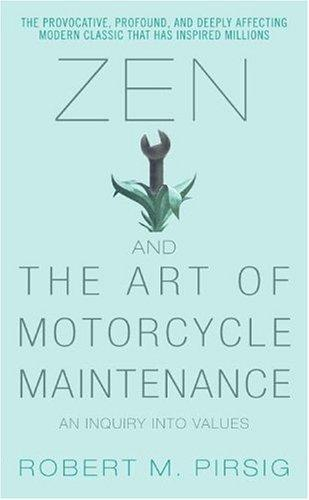

罗伯特·波西格（Robert M. Pirsig）1928年生于明尼苏达州明尼阿波利斯，大学期间主修化学与哲学，后赴印度贝拿勒斯印度教大学研习东方哲学，并取得修辞学硕士学位。《禅与摩托车维修艺术》成书于1974年，波西格前后花费四年写就，书稿被121家出版社相继拒绝，终由威廉·莫罗出版公司出版，首印三个月售出五万册，最终全球销量逾五百万册，成为二十世纪美国文学中最具影响力的哲学性散文之一。这本书的写作背景是波西格1968年与十一岁的儿子克里斯骑摩托车从明尼苏达横穿美国西部的真实经历；波西格本人曾因精神疾病接受强制电休克治疗，这段经历深刻影响了书中关于自我认同与心智探索的叙述。
这本书以公路旅行为叙事外壳，内核是对"品质"（Quality）这一哲学概念的深入探讨。波西格借助一个在书中被称为"斐德鲁斯"的过去自我，追溯了一段激烈的学术思想历程：斐德鲁斯在蒙大拿大学执教修辞学期间，对古希腊哲学中理性与浪漫的二元对立感到深刻的不满足，进而试图构建一套以"品质"为核心的哲学体系——品质先于主体与客体，先于理性与感性，是人类经验中最根本的直接实在。书中还贯穿着一条隐线：旅行中的波西格与同行朋友约翰对待摩托车故障的态度截然不同，约翰排斥技术，只愿享受骑行；波西格则主张真正理解并亲手维护机器，认为对技术的掌控是精神专注与"品质意识"的实践。这两种态度映射出现代人与技术、与工作、与自我的不同关系。
这本书在出版后的半个世纪里获得了跨领域的高度评价。英国著名作家罗伯特·麦克法兰（Robert Macfarlane）将其列为"改变他一生的书"。斯坦福大学人文学科教授罗伯特·哈里森（Robert Pogue Harrison）称它是"二十世纪美国哲学写作中最重要的作品之一"。在技术与商业领域，这本书被硅谷创业者和工程师广泛推崇，因为它对"品质意识"与"专注于过程"的阐述契合了卓越产品创造的精神内核。中文版《禅与摩托车维修艺术》由重庆出版社出版，多次再版，是中国读者接触西方哲学与现代性反思的重要入口之一。
对于关注商业决策与人生选择的读者，这本书提供的不是投资技巧，而是一种更根本的思维方式：如何在理性与直觉之间找到平衡，如何在追求效率的同时不失去对"品质"的感知力。波西格的核心论题——真正的卓越来自于对工作的全然投入，而非对结果的焦虑追逐——对于任何试图在高压竞争环境中保持内心秩序的人，都有深刻的参照价值。这本书的伟大之处在于，它用一段公路旅行的故事，触及了人类在现代文明中最核心的困惑：我们如何与所做的事建立真实而有意义的关系。